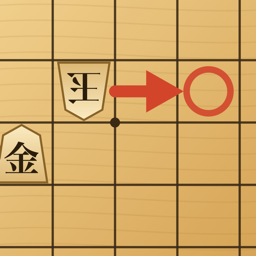

玉が逃げて見せる詰将棋
まちがえると、玉が本当に逃げて見せる詰将棋。iPhone と iPad のアプリです。
正解でない王手を指すと、アプリが玉方のいちばんよい受けを計算して指し返します。玉が逃げた道を盤に朱の矢印で残すので、「なぜ詰まないのか」が盤の上で分かります。「もどす」で戻って、考え直せます。
- まちがえると玉が逃げて見せる：逃げる・取る・合駒を打つ、を玉方が指し返し、朱の矢印と輪で残します
- 1手詰120問・3手詰120問・5手詰60問の300問。どの問題も、アプリの詰みの計算で「その手数より短くは詰まない」「正解の攻め方の手はほかにない（余詰めなし）」「盤の攻め方の駒はどれも要る」「攻め方の持ち駒は使い切る」を確かめてから入れています
- ヒント：1回目は動かす駒が光り、2回目は答えを指して見せます
- 解いた問題に ○、ヒントもまちがいもなしで解いた問題に ◎ が付きます
- 木の将棋盤（榧の色の盤・墨の線・つげの五角形の駒）。iPad の横向きでも盤を大きく出します
- 登録・課金はありません。インターネットにつながっていなくても使えます。画面のいちばん下に小さな広告が出ます（画面いっぱいの広告・動画の広告は出ません）